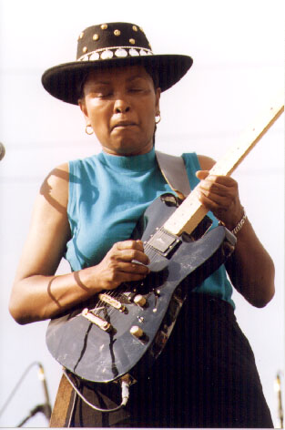
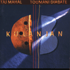
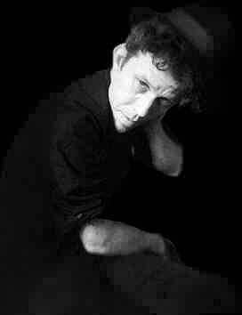
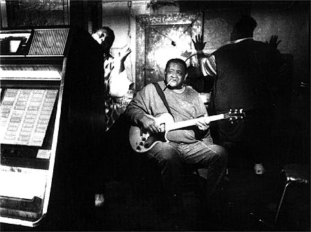
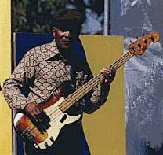

Дебора Коулмэн получила широкую известность после дебютного альбома 1994 года "Принимая стойку" ("Takin' a Stand"). Сейчас ей 42 года, у нее за плечами уже 4 альбома, участие во всех престижных блюз-фестивалях США. В нынешнем году она стала первой женщиной, получившей номинацию на премию им.В.К.Хэнди в категории "Лучший исполнитель на гитаре". В современном блюзе, где и в целом большая нехватка женских лиц, кроме Коулмэн нет ни одной известной афро-американки, играющей блюз на гитаре.Дебора Коулмэн родилась в семье военного. Начала играть на гитаре в 8-летнем возрасте, серьезно стала относиться к игре с 15 лет, выступала с рок- и ритмэндблюзовыми группами. В 25 лет оставила музыку в связи с рождением дочери. Работала медсестрой, электриком... Вернулась к гитаре только тогда, когда дети выросли.
Дебора Коулмэн: "I love the guitar. I have a great passion for the guitar!" - "Я люблю гитару. Это просто страсть!".
Об истоках своего стиля Д.Колумэн говорит, что выросла, слушая Джими Хендрикса, Джеймса Брауна, "Крим", Джефа Бека и Лед Зеппелин. Только в возрасте 19 лет она открыла для себя блюз в записях Джона Ли Хукера, Хаулина Вулфа и Мадди Уотерса.
Д.Коулмэн: "Теперь я пытаюсь развивать те стили, на которых я выросла. Не копировать кого-то, но брать понемногу и смешивать со своим. Надеюсь, то, что у меня получится, и будет моим собственным стилем, индивидуальным, как подпись. Я очень взволнована этой номинацией в гитарной категории. Потому что впервые женщина номинируется в этой категории - никогда раньше такого не было. Так что я просто в восторге."
В этом году у Коулмэн две номинации. Вторая - в категории "Современный блюз". Этот успех критики связывают с последним альбомом Д.Коулмэн "Где соломку постелить" ("Soft Place to Fall"). Как и предыдущие три, он выпущен фирмой "Слепой хряк" (Blind Pig), но гитаристка считает, что на этот раз ей очень повезло с продюсером Джимом Гейнзом (Jim Gaines), который прежде работал с Сантаной, Стиви Реем Воэном и многими другими "звездами".

6 мая "Ассоциация независимой музыки" (Association for Independent Music (AFIM) будет представлять свои награды за 1999 год. Среди номинантов - альбом "Куланджан" ("Kulanjan")) известного гитарного виртуоза, знатока народной музыки всего мира и блюзмэна Тадж Махала, записанный им вместе с Toumani Diabate, виртуозом игры на африканском инструменте "кора". Для Тадж Махала обращение к "world music" стало уже традиционным. Среди 40 альбомов, записанных им с 1967 года, уже есть несколько с участием африканских музыкантов. Название нового альбома выбрано по старинной африканской песне, которую Тадж Махал услышал во время своего первого визита в Мали в 1979 году и которая сразу покорила его своей своеобразной красотой. В альбом включены традиционные малийские мелодии, несколько песен и тем сочинения обоих музыкантов и один старинный дельта-блюз: "Зубатка" ("Catfish"). Идеологию проекта лучше всего раскрывает название одной из композиций альбома: "Mississippi-Mali Blues".
В феврале Том Уэйтс, сопровождаемый супругой и соавтором Кэтлин Брэннан, посетил Копенгаген, где продолжается работа над постановкой его авангардной театральной оперы "Войцех" ("Woyzeck"). Режиссер Роберт Уилсон (Robert Wilson) уже ставил две музыкальные пьесы Т.Уэйтса: "Черный всадник" ("Black Rider") и "Алиса" ("Alice"), по мотивам сочинений Льюиса Кэррола.
На май намечено короткое европейское турне, включающее в себя концерты в Польше. Турне проводится в поддержку альбома 1999 года "Вариации для мула" ("Mule Variations"), который Т.Уэйтс выпустил после 6-летнего перерыва в своей сольной дискографии. На конец этого года уже намечен выпуск следующего альбома, и Т.Уэйтс сейчас работает над новыми песнями. Кроме того, он продюсирует запись нового альбома давнего своего товарища, блюзового певца, гитариста и харписта Джона Хэммонда, мл (John Hammond, jr.).
В 1991 году Джуниор Кимброу превратил здание заброшенной церковки в хорошую блюзовую берлогу. Местечко называется Святой Источник (Holly Springs), это в холмистом районе Миссиссиппи. Здесь устраивались вечеринки для соседей и - иногда - заезжих знаменитостей (Бывали тут всякие "Роллинг стоунз" и "Ю-Tу"). К столу подавалась кукурузная самогонка; музыканты на сцене могли играть только сидя, поскольку высота потолка чуть превышала 180 см. Зимой кабачок отапливался печкой в центре комнаты. Чудесная атмосфера этого заведения заснята в фильме Роберта Палмера "Глубокий блюз" (Deep Blues). Здесь же были записаны некоторые альбомы независимой фирмы "Жирный опоссум" ("Fat Possum"). В буклете к альбому Дж.Кимброу "Всю ночь напролет" ("All Night Long"), Палмер описал обычную полуденную блюзовую попойку в этом заведении:

"Ползу в грязи меж рядов цветущего ослепительно-белого хлопка по полю сбоку старой деревенской таверны Джуниора, и эта женщина, Боже, ей должно быть лет 60, ползает по грязи со мной, я не вру! Оба мы там, на солнцепеке, опьяневшие от "белой молнии" (самогонки) в середине дня! Вот это воскресенье! В хибаре усилители включены на полную, барабаны заставляют сотрясаться доски пола, все слышно отлично. Да, даже снаружи, в грязи.
Иногда музыка внутри становится насыщенной настолько, что подумаешь дважды, прежде чем зайти. Люди роятся на крыльце, рассаживаются по-птичьи на перилах, пьют из банок. А эта большая комната, которая составляет почти весь дом, она сотрясается джуниоровским битом, джуниоровским ритмом. Ты входишь внутрь, пытаешься пройти меж танцующих, и ты уже танцуешь сам, не заметив, когда это с тобой случилось. Танцы как в трансе, все покрыты потом, и песня продолжается бесконечно, пока у людей глаза не закатываются под лоб. И ты танцуешь, и вдруг кто-то уже танцует с тобой, и уже скоро вы оба будете там снаружи кататься по грязи опять. Как вам такое?
Несколько дней спустя, опять полдень, мы устанавливаем аппаратуру для записи, и небо начинает темнеть. Хлопковые гряды и тянущаяся вдаль вникуда наезженная двухколейная дорога составляют обездвиженный пейзаж, жизнь только в нашем кабаке с церковной пирамидкой на крыше. Облака набежали внезапно, и, когда Джуниор пел медленный блюз, молния ударила в сам кабак, заставив скомкать слова в конце. "Медленная молния" ("Slow Lightnin'") была результатом. Остальные песни - это выбор самого Джуниора для этого, его первого альбома. Исполнение такое, как случилось: ни исправлений, ни дополнений. В них нет нужды, когда пробивает молнией. Этого достаточно, чтобы торчать всю ночь напролет."
Уже нет в живых ни Джуниора Кимброу, ни Роберта Палмера. Сгорел дотла веселый кабак, в котором блюз звучал с гипнотической силой. Формально названия у него так и не было. Зачем ему название, если в рекламе он не нуждался? Местные говорили: "Пойдем к Джуниору?" И был всегда ответ: "А как же!"
До того, как стать церковью, здание служило магазином. В 1991 году началась его новая жизнь, маленький зальчик стал символом продолжения жизни необработанного, сырого и мощного миссиссипского блюза - в новые времена. Почти всегда сам Дж.Кимброу вел концерты, и часто выступал его сосед, Ар-Эл Бернсайд (R.L.Burnside). Блюз здесь был, как писал Палмер, делом семейным. Буквально: в группе с ними играли их сыновья, внуки и прочая родня. "Они согласовывают зачастую идиосинкразические структуры и обороты мотивов Джуниора с внешне случайным мастерством." После смерти Джуниора Кимброу от сердечного приступа, дела вел его сын Кинней Кимброу. Причина пожара пока не установлена.

В середине марта Дейв Майерс (Dave Myers) перенес тяжелую операцию: вследствие осложнений от диабета ему ампутирована нога до колена . Сейчас Дейву Майерсу 74 года, он был непосредственным участником Чикагской электроблюзовой революции, бассистом группы "Четыре Туза" ("The Four Aces") - (возможно) самого первого электрофицированного блюзбэнда в Чикаго. Вместе с братом, гитаристом Луисом Мейерсом, и барабанщиком Фредом Билоу (Fred Below), на заре 50-х они составляли самую горячую ритм-секцию города ветров. (Позже группа называлась просто "The Aces", а после того, как Литл Уолтер добился успеха с песней "Джюк" - стали называться "Jukes".) Бас Майерса звучит в большинстве шедевров Литл Уолтера (Little Walter). Он выступал и записывался почти со всеми великими: Мадди, Вулф, Санни Бой...
Бывшие новости |
Январь-Февраль 1999 |
Март 1999 |
Ноябрь-Декабрь 1999
Январь 2000 |
Февраль 2000 |
Март 2000 |
Апрель 2000